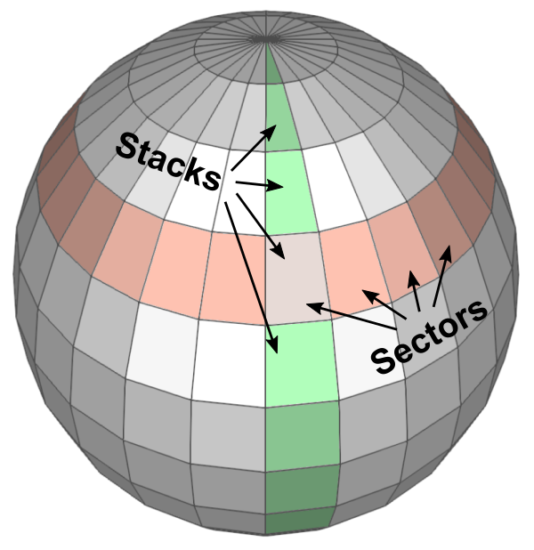
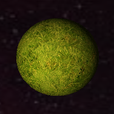
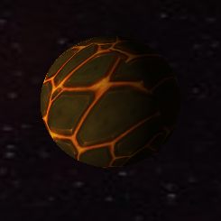

Solar System
A real-time renderer made with OpenGL
Description
This project is a real-time renderer using OpenGL. It is a simulation of a solar system (not up to scale nor based on any real-life solar system). A solar system is composed of a set of planets (spheres) that orbit around an object in the center (a sun or a planet). The simulation runs in real-time, showing the movement of the planets around an orbit. This OpenGL project lays the foundations for basic shading and general movement of objects and the camera. The functions from this project may be used for the creation of a simple computer game in the future.
Download

Full Demonstration
Features
Sphere rendering - (Vertices, Indices, Texture Coordinates, Normals)
Multiple textures wrapped around spheres

Continuously orbiting planets, planets spin around an axis
Orbiting arc ball camera (Virtual trackball, pan around a planet)
Object picking (Ray-Sphere intersection)
Smoothing of camera transitions using linear interpolation (lerp)
Difficulties and Tricks
Sphere rendering:
I ignorantly assumed that rendering spheres in OpenGL would be as easy as calling a function with the sphere’s center and desired radius. Apparently, that is not the case if you are not using a library such as GLut. Luckily, I found online resources that describe how a sphere can be split into triangles and the math that generates its vertices, normals, texture coordinates, and indices.
Background:
Since outer space is supposed to be infinitely big and visible from all angles in three-dimensional space, having a static square background would ruin the immersion. A simple solution to this is to wrap the solar system with a sphere that has a space or stars texture on its inside face.
Matrices, vectors, and 3D space:
Almost all the objectives mentioned above relate directly to movement and placement in three-dimensional space. A proper separation and abstraction of the vectors and matrices involved, such as view, project, and model matrices, was very important. All relevant positions and movements relating to the camera and the spheres were put into their own classes.